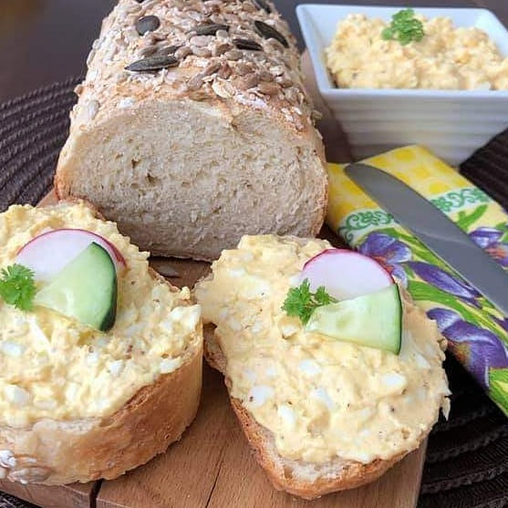

Vajíčková nátierka podľa @zuzanazuzzi — Normy Jedál
Domáci chlieb 🍞🌾 a chutná domáca vajíčková nátierka 🥚
--------------
500 g hladkej múky, soľ, 1 čajová lyžička octu, na kvások: 22 g čerstvého droždia, 2 čajové lyžičky cukru, 270 ml mierne ohriatej vody.
+ rascu, tekvicové semiačka / dala som do cesta /
+ slnečnicové, tekvicové semiačka, sézam, ovsené vločky / spravila som zmes a posypala vrch chleba /
Zo surovín som vymiesila cesto, posypala trochou múky, zakryla, nechala som na teplom mieste vykysnúť.
Keď cesto vykyslo, vytvarovala som požadovaný tvar chleba, preniesla do formy vyloženej papierom na pečenie.
Zakryla som, nechala som ešte 20 min nakysnúť. Pred pečením som potrela slanou vodou, posypala pripravenou zmesou.
Piekla som v predhriatej rúre. Najprv na 250 stupňov, 25 min, potrela som opäť slanou vodou a potom na 180 stupňov, 25 - 27 min.
Po upečení som nechala vychladnúť na mriežke.
#domacichlieb #vajickovanatierka #homemadebread